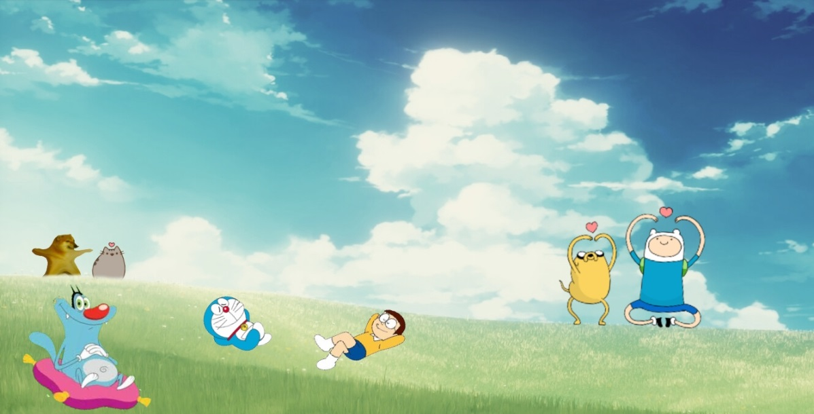

Hi! I am Uzair Ali and I'm a resident of Pakistan.
I love to play games and read occasionally and dabble in writing as well as some image editing along with proofreading.
Currently I'm taking part in this course in order to learn something about web development and maybe make a career in it.
I have written for many clients and have done various courses on both writing and image editing
My experience with testing games has also been a great time as my passion for gaming makes it a much more enjoyable endeavour and has helped ignite my passion for gaming.
My image editing days started when I wanted to make my own wallpapers for my desktop, Here is a image of my first one.
